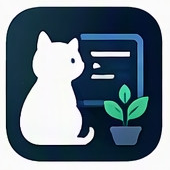

HTML文書取込
HTML貼り付け・ファイル選択から、端末内で本文・見出し・リンクを抽出。
Open HTML Import →
myon-bioinformaticsBioinformatics → Security/Backend engineer. I build practical CLI and browser tools in Python, plus Node.js and Dart/Flutter.
All public repositories, including archived work. Active projects appear first.
More on GitHub
Curated examples — checking live GitHub data.
Open a project below to use its browser tools.
HTML貼り付け・ファイル選択から、端末内で本文・見出し・リンクを抽出。
Open HTML Import →ブラウザでスライドを作成し、文字・図形・矢印を編集可能なPPTXへ出力。画像編集・ドット絵・画像一覧も利用できます。Markdown→PPTX変換と既存PPTXの属性編集はローカルCLIの試作実装です。
Open Image Studio → Open Browser Tools → Open Slide Studio →Wikipedia表示・Pixiv原文抽出と、ラボの検証結果スナップショット。
Open Tool Lab →Browser-accessible Flutter utility collection.
Open Flutter Tools →このポートフォリオのツールページの見た目と表示部品を、ビルド不要の共通UI部品でそろえています。
tokens → base → components → themes/modern の CSS 層と ui-* クラスweb_ui.py の render_document（HTML文書取込をこれで生成）adopt_document で lab 独自クラスを ui-* に置換し、挙動は元のままui.js の setText（textContent のみ）と prettyJsonnavigation.js の bindViews（Home / Wiki / Pixiv）と openExternalURLvendor.lock.json に記録Twitter: @myonitbusiness